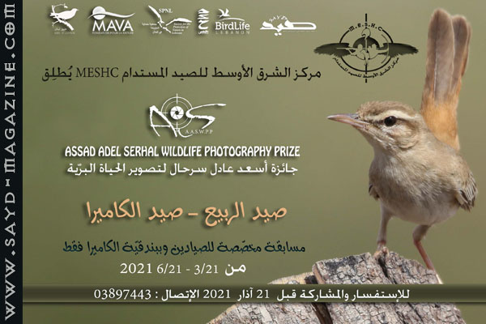
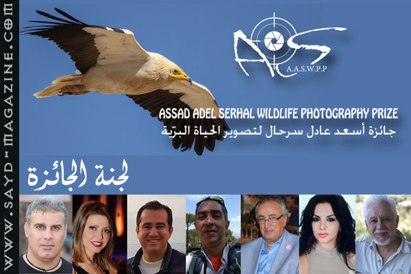

أطلق مركز الشرق الأوسط للصيد المستدام MESHC مشروعا لحماية الطبيعة من الصيد في فصل الربيع – فصل التكاثر من خلال " جائزة أسعد عادل سرحال للتصوير البرّي" وهي جائزة مخصصة للصيادين، يصطادون صورهم البرّية ببندقية الكاميرا عوضا عن بندقية الخرطوش، وذلك بهدف التوعية على ضرورة الالتزام بإنتهاء موسم الصيد في 15 شباط، والانتقال الى هوايات بديلة تحمل روح الصيد ومهارته وتؤمن التواصل للصياد مع الطبيعة بدون إحداث اي ضرر، وتجعل العالم يشاهد إبداعه في قنص الصورة المميزة. اسم الجائزة: سمّيت الجائزة بإسم أسعد عادل سرحال تيمناً بالصياد القديم المحترف أسعد سرحال إبن السيد عادل سرحال احد شيوخ الصيادين في لبنان ايام الرئيس الراحل كميل شمعون، الذي يعتبراليوم من أبرز حماة الطبيعة من خلال موقعه كمؤسس ومدير عام لجمعية حماية الطبيعة في لبنان SPNL – و كمستشار دولي للمجلس العالمي للطيور BirdLife International - والحائز على جائزة ميدوري العالمية للتنوع البيولوجي في اليابان بسبب اعادته لمفهوم الحمى وتفعيله في حماية الطبيعة – والحائز ايضا على وسام الاستحقاق الفضي من رئاسة الجمهورية في لبنان . الية المسابقة : 1- تبدأ مسابقة التصوير كل سنة من 21 آذار (عيد الأم) كتاريخ رمز لبناء العائلة انسجاماً مع موسم تكاثر الطيور وتنتهي في 21 حزيران (المدة 3 أشهر) 2- يجب ان تكون الصور حديثة واضحة ( 2ميغابايت كحد أدنى – نسبة اقتطاع2*3) لطيور وحيوانات برّية، ومصوّرة ببندقية الكاميرا وموقّعة من قبل صاحبها. 3- يقدّم كل مشارك 5 صور الى لجنة المسابقة قبل انتهاء شهر حزيران، عبر inbox الصفحة. 4- تختار اللجنة بالاجماع صورتين من مجموعة الصور ال5 من كل صياد. 5- يتم عرض الصورتين على التصويت على صفحة الجائزة لمدة اسبوعين. 6- تفوز الصورة التي حصلت على اكثر نسبة likes . 7- تتأهل الصور التي فازت، ويتم عرضها للتصويت مجددا لمدة اسبوع، للمنافسة على المراتب الثلاث الأولى. - يجري اختيار الصور والتصويت عليها وإعلان النتائج خلال شهر تموز.. - يحدد الاحتفال بالفائزين خلال شهر آب حيث يقام معرضا لكل للصور التي شاركت في المسابقة وتسسلم الجوائز الى الفائزين بحضور شخصيات من عالم الصيد والبيئة وممثلي وزارت وجمعيات وإعلام . شروط المسابقة: 1-ان يكون المشترك صيادا مستداما محترفا يتمتع بأخلاقيات الصيد بالكاميرا ويراعي اصول وآداب تصوير الطيور في الربيع، من عدم ازعاجها أو لمس اعشاشها وإخافتها، ودفع الاهل لهجرة الاعشاش. 2- يكون التصوير عبر بندقية الكاميرا ( يقدم المركز لكل مشترك هذا البندقية ليثبت عليها كاميرته الخاصة ويلتقط بها الصور ويعيدها بعد انتهاء المسابقة) 3- المسابقة حصرا لتصوير الطيور والحيوانات البرّية. 4- يمنع المشاركة بصور سابقة ويجب ان يكون هناك توثيق للزمان والمكان للصور المشاركة. 5- يجب تقديم صورة جميلة ومميزة للصياد المشترك وهو يقوم بالتصوير ببندقية الكاميرا لعرضها في المعرض . 6- كل مشترك يسمح بطريقة تلقائية بإستعمال صوره من قبل مركز الشرق الاوسط للصيد المستدام وجمعية حماية الطبيعة في لبنان بهدف التوعية والتدريب. قيمة الجوائز أو ما يوازيها: المرتبة الأولى ( 800 دولار أميركي) + مجموعة كتب عن عالم الطيور المرتبة الثانية (600 دولار أميركي) + مجموعة كتب عن عالم الطيور المرتبة الثالثة (400 دولار أميركي ) + مجموعة كتب عن عالم الطيور جوائز المشاركة : مجموعة كتب عن عالم الطيور
لجنة الجائزة : # أسعد عادل سرحال : (صاحب الجائزة) مؤسس ومديرعام جمعيّة حماية الطبيعة في لبنان SPNL - مستشار دولي للمجلس العالمي للطيور BirdLife International - حائز على جائزة ميدوري العالمية للتنوع البيولوجي في اليابان – حائز على وسام الاستحقاق الفضي من رئاسة الجمهورية في لبنان. # أدونيس الخطيب: (مدير الجائزة) رئيس مركز الشرق الأوسط للصيد المستدام MESHC – صاحب ورئيس تحرير مجلة صيد- مدير ملف الصيد المسؤول في جمعية حماية الطبيعة في لبنان SPNL- المسؤول المشرف على وحدة مكافحة الصيد الجائرAPU. # د.غسان جرادي : خبير طيور دولي معتمد من جمعيات محليّة وعالميّة. عضو المجلس الأعلى للصيد البري في وزارة البيئة اللبنانية - المدير التنفيذي للجنة الطيور النادرة اللبنانية في المجلس الوطني للبحوث والعلمية - مستشار علمي لجمعية حماية الطبيعة في لبنان SPNL. # فؤاد عيتاني: رئيس جمعيّة حماية الطيور في لبنان ABCL – مدير قسم الصيد والتصوير البرّي في مجلة صيد – مصوّر برّي محترف حائز على المركز الأول في المسابقة الفوتوغرافية لهجرة الطيور في دبي. # د.منى صايغ : دكتورة في الفنون البصريّة – فنانة تشكيليّة. # سهى تحومي : منظِّمة رياضات في الهواء الطلق. # اندره بشارة : صاحب ومدير شركة Great Escape للسياحة البيئيّة – مدير مزارع الحمى في جمعيّة حماية الطبيعة في لبنان SPNL.